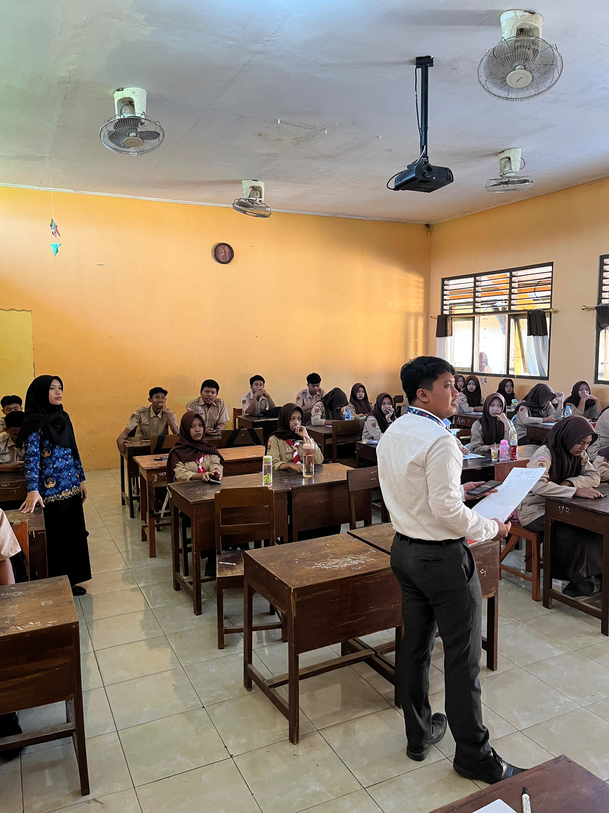
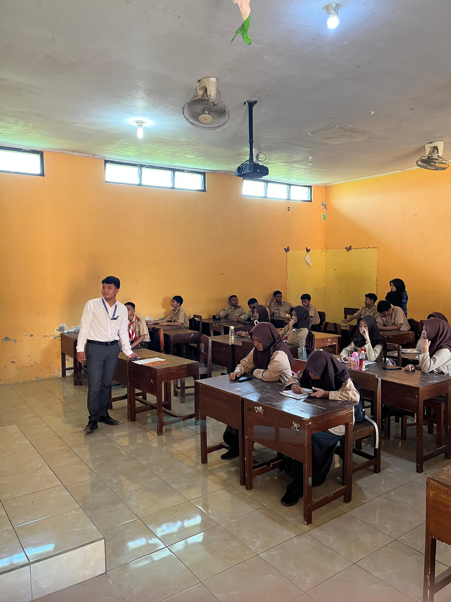
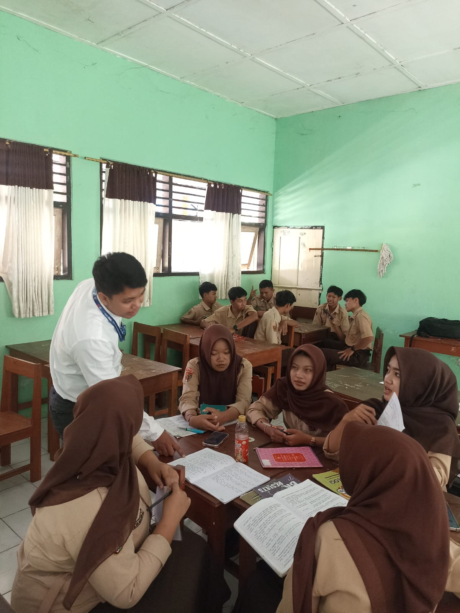
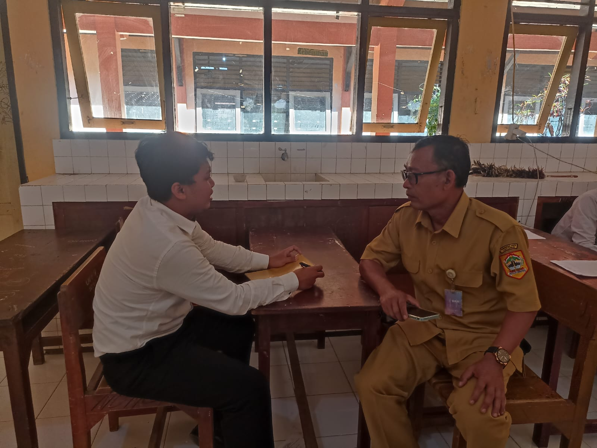
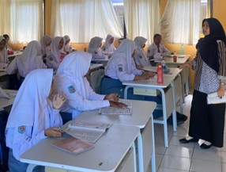
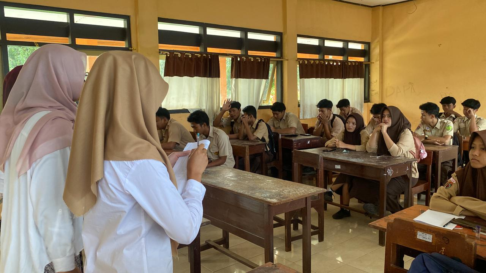

Rekam jejak visual perjalanan transformasi mengajar, kolaborasi, dan interaksi bermakna di SMA Negeri 1 Karangnongko.

PRAKTIK MENGAJAR
PRAKTIK MENGAJAR
PRAKTIK MENGAJAR
BIMBINGAN
OBSERVASI
OBSERVASIMelaksanakan pembelajaran aktif dengan model PjBL dan diferensiasi untuk mengakomodasi gaya belajar peserta didik yang beragam.
Mengamati dan menganalisis proses pembelajaran bersama guru pamong untuk mengidentifikasi area pengembangan kompetensi mengajar.
Berdiskusi secara intensif dengan dosen pembimbing dan guru pamong untuk evaluasi serta perbaikan berkelanjutan dalam proses pembelajaran.
Merancang dan menerapkan instrumen penilaian autentik yang berorientasi pada kompetensi dan profil pelajar Pancasila.
Berkolaborasi dengan sesama mahasiswa PPG dan guru pamong dalam merancang dan merefleksikan praktik pembelajaran inovatif.
Beradaptasi dengan budaya dan lingkungan belajar di SMA Negeri 1 Karangnongko untuk menciptakan pembelajaran yang relevan dan kontekstual.